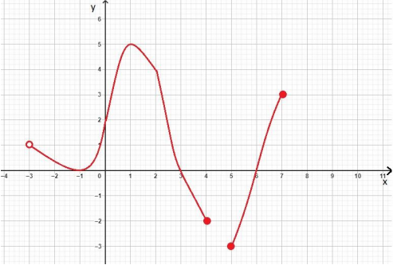
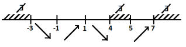

Función
Definición
Una función f es una regla que asigna a cada elemento x de un conjunto D exactamente un elemento,
llamado f(x), de un conjunto E.
Usualmente consideramos funciones para los cuales los conjuntos D y E son conjuntos de números
reales.
Conjunto D: dominio de la función.
Conjunto E se le denomina Codominio.
El número f(x) es el valor de f en x y se lee “f de x”.
Formalmente se dice “f(x) es la imagen de x, según la función f”
El rango de f es el conjunto de todos los valores posibles de f(x) conforme x varía a través de
todo el dominio.
El método más común para la visualización de una función es con su gráfica.
Si f es una función con dominio D, entonces su gráfica es el conjunto de pares ordenados:
{(x, f(x)), x ∈ D}

-
Dominio:
El dominio de una función f es el conjunto de todos los valores que puede tomar la variable independiente. Se lo simboliza Dom(f) o simplemente D(f)
-
Rango o recorrido:
El rango de una función f es el conjunto de todos los valores que toma la variable dependiente. Se lo simboliza Rg(f).
-
Raíces o ceros de la función:
Es el conjunto de los valores de x en donde la función, evaluada en dichos valores es cero
Ceros(f) = {x ∈ D(f)/ f(x) = 0}
-
Ordenada en el origen:
Es el valor de la función cuando x = 0: f(0)
-
Estudio del signo:
Se entiende por estudio de signo el indicar los intervalos de los x del dominio, donde f(x) es positiva o negativa.
-
Función creciente:
Una función f es creciente en un intervalo I, si y sólo si para cualquier elección de x1 y x2 en I, siempre que x1 < x2, tenemos f(x1) ≤ f(x2)
Esto es: ∀ x1, x2 ∈ I: Si (x1 < x2) ⇒ (f(x1) ≤ f(x2)) -
Función creciente:
La función f es decreciente en un intervalo I ⇔ ∀ x1, x2 ∈ I: Si (x1 < x2) ⇒ (f(x1) ≥ f(x2))
-
Función estrictamente creciente:
La función f es estrictamente creciente en un intervalo I
⇔ ∀ x1, x2 ∈ I: Si (x1 < x2) ⇒ (f(x1) < f(x2)) -
Función estrictamente decreciente:
La función f es estrictamente decreciente en un intervalo I
⇔ ∀ x1, x2 ∈ I: Si (x1 < x2) ⇒ (f(x1) > f(x2)) -
Monotonía:
Se dice que f es una función monótona en un intervalo I, si y sólo si f es o estrictamente creciente o
estrictamente decreciente en ese intervalo.
Ejemplo
Sea la función f:D ⊆ R ⟶ R
Observación: Distintas bibliografías y docentes pueden dar preferencia a distintas formas de expresar
una solución. Las más usuales serán presentadas como formas sugeridas. En clase consultar al
docente, cuál es de su preferencia. Será importante que el estudiante agregue el subtítulo según lo
que vaya a determinar a continuación.
-
Dominio:
Forma 1:
Dom(f) = (−3; 4] ∪ [5; 7]
Forma 2:
Dom(f) = R − ((−∞; −3] ∪ (4; 5) ∪ (7; +∞))
Forma 3:
Dom(f) = {x ∈ R/−3 < x ≤ 4 ∨ 5 ≤ x ≤ 7}
-
Rango:
Forma 1:
Rg(f) = [−3; 5]
Forma 2:
Rg(f) = R − ((−∞; −3) ∪ (5; +∞))
Forma 3:
Rg(f) = {x ∈ R/ −3 ≤ x ≤ 5}
-
Raíces/Ceros:
Forma 1:
Sol = {−1; 3; 6}
Forma 2:
f(x) = 0 ⇔ x ∈ {−1; 3; 6}
-
Ordenada en el origen:
f(0) = 2
-
Estudio del signo:
Forma 1:
La función tiene imágenes positivas en los intervalos: (−3; 3) y (6; 7)
La función tiene imágenes negativas en los intervalos: (3; 4) y (5; 6)Forma 2:

-
Estudio del crecimiento:
Forma 1:
La función es creciente en los intervalos: (−1; 1) y (5; 7)
La función es decreciente en los intervalos: (−3; −1) y (1; 4)Forma 2:
